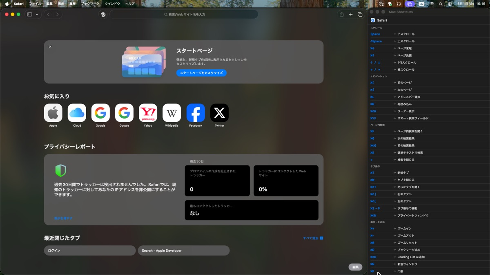

01
Mac Shortcuts
アクティブなアプリを自動検出し、そのアプリのキーボードショートカットを画面右端にリアルタイム表示するmacOSアプリ。ウィンドウの自動整列機能も搭載し、作業スペースを効率的に活用できる。
- アプリ切替を検出し、ショートカット一覧を即座に切替
- ウィンドウ自動整列（アプリ: 左3/4 / 本アプリ: 右1/4）
- Safari, Chrome, VS Code, Xcode など主要アプリに対応
Swift
SwiftUI
AppKit
Accessibility API
VIEW ON GITHUB →